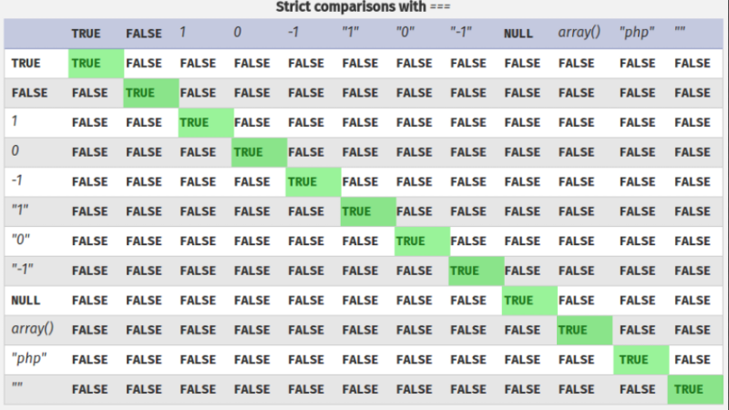

# PHP Type Juggling
References
•
Overview Presentation by Chris Smith•
Good Cheat Sheet•
San’s Blog•
Magic Hashes## About
When comparing between data types, PHP has 2 levels of type comparison:
•
== - loose
•
=== - stritct
### Strict Comparisons
Strict comparisons -
=== - have to be exactly the same
### Loose Comparisons
Loose comparisons -
== - don't have to be exaclty the same.
PHP will make predictions on the types being compared to compensate for human error.
For example:Comparing 2 strings?• If PHP decides that both operands look like numbers, despite them actually being strings, PHP will convert them both to integers and perform a comparison
“0e12345” == “0e54321” equals
TRUE“0e12345” <= “1” equals
TRUE“0e12345” == “0” equals
TRUE“0xF” == “15” equals
TRUEComparing an integer and a string?• PHP will attempt to convert the string to a number, and then perform a comparison
◇ string starts with 0? php converts the string to the number 0
◇ strings starts with 1? php converst the string to the number 1
◇ string starts with a letter? php convert the string to the number 0t
“0000” == int(0) equals
TRUE“0e12” == int(0) equals
TRUE“1abc” == int(1) equals
TRUE“0abc” == int(0) equals
TRUE“abc” == int(0) equals
TRUE0e•
e in php means
convert the number to an exponent (a power)
◇ e.g.
24e12 translates to
2412• Because of loose type juggling, this causes a problem
For example, you have 2 strings:
•
"0e462097431906509019562988736854"•
"0e830400451993494058024219903391" ◇ You compare these 2 strings
◇
"0e462097431906509019562988736854" ==
"0e830400451993494058024219903391" equals
TRUE ◇ Because you used a loose comparison -
== - these 2 strings are equal
▪ This is because:
- PHP has decided that these strings actually look like numbers, despite them being strings
- Because PHP sees them as numbers, it converts the strings to integers and, because of
e. converts the numbers after
e into exponents
→
0e462097431906509019562988736854 now becomes
0e462097431906509019562988736854 →
0e830400451993494058024219903391 now becomes
0e830400451993494058024219903391 - Now PHP performs the integer comparison
- Both integers are read as
0e - PHP runs
0e == 0e, which equals true
- These 2 hashes, despite being completely different, have been classed as numerically equal by PHP because of loose type casting
• How to exploit
0e?
◇
0e is exploitable if you're dealing with password hashes/logging into a system
◇ e.g. admin's md5 password hash is
0e462097431906509019562988736854 ◇ To log in as admin, you need to find a password that, when md5 hashed, starts wtih
0e ▪ When PHP compares the password that we submit at login to the password in the database, it will only compare the
0e part of the string (because the rest of it is converted into an exponent)
◇
https://www.whitehatsec.com/blog/magic-hashes/ has a collection of passwords that hash to
0e in various different formats
Examples:
•
hackthebox Falafel